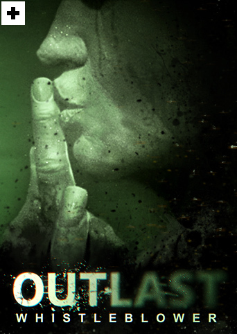
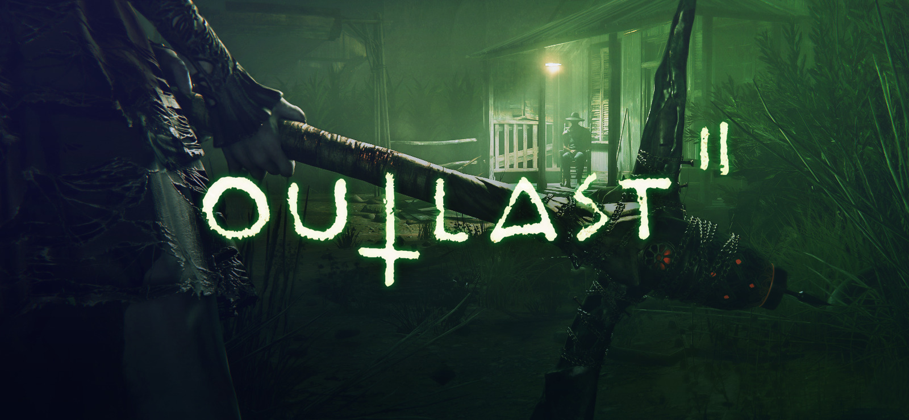

About Me
Hi, I’m Joey. I’m a Game Design major who’s really into horror games and the way they build atmosphere. I’ve always loved how horror can make you feel tense, curious, and uncomfortable all at once. That mix of fear and creativity is what inspires me the most, and it’s a big part of why I want to make games myself someday.
My Favorite Horror Game
My favorite horror game is Outlast. It’s the game that really pulled me into the genre and made me realize how powerful horror can be. Outlast uses sound, lighting, and that feeling of being totally helpless to create fear that sticks with you long after you stop playing. It’s one of those games that doesn’t just scare you it stays in your head.

Outlast (2013)
The original Outlast sets the tone for the series with its terrifying asylum setting, night‑vision camera, and helpless survival gameplay.

Outlast: Whistleblower (2014)
This DLC expands the story, showing the events before and after Outlast. It’s even more intense, disturbing, and fast‑paced.

Outlast 2 (2017)
Outlast 2 takes the horror to a rural cult setting, focusing on psychological fear, religious themes, and extreme tension.
Why I Want to Make Horror Games
I want to make horror games because I love the challenge of creating fear through design. Horror isn’t just jumpscares it’s pacing, storytelling, environment, and psychology. I want to learn how to build experiences that make players feel something intense, whether it’s dread, curiosity, or that “oh crap” moment when everything suddenly clicks. Making something unforgettable is the goal.